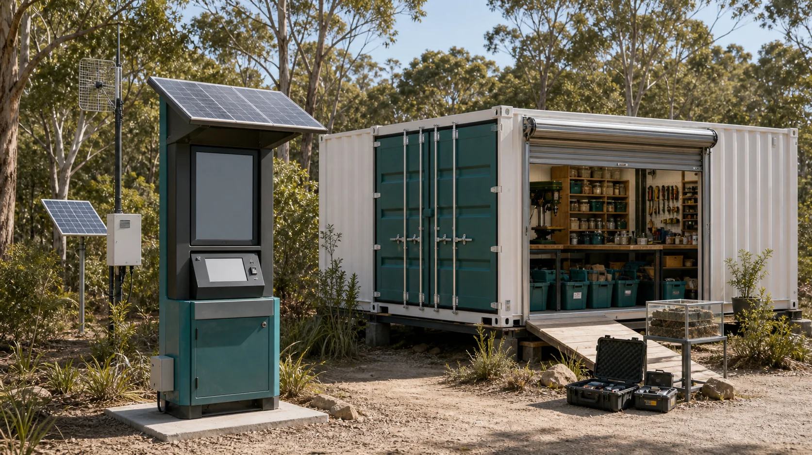

Sandworm systems
What tiny models, boring-head sketches, spoil-handling diagrams and safety questions would help the public understand tunnelling before anyone talks about digging?
The Sandworm and subterranean city material belongs on the horizon map because it asks a strong question: what tools, skills, data, safety culture and island-built engineering would be needed for future-forward design?

The archive includes bold material about Sandworm tunnelling systems, silica citadels, underground services, local compute, energy storage, permaculture, housing and future resilience. A public proposal can respect the imagination while showing the practical steps that make ambition accountable.
What evidence, prototypes, models, permissions and partners move a future system from story-space into serious public due diligence?
Future infrastructure would need cultural authority, land access, engineering design, environmental assessment, geotechnical work, insurance, community support, funding, planning approval and long-term governance. The maker-space can help map those questions without claiming they are solved.
These ideas become less foggy when they are broken into practical learning questions.
What tiny models, boring-head sketches, spoil-handling diagrams and safety questions would help the public understand tunnelling before anyone talks about digging?
The lab can map underground utility ideas as resilience research: cool rooms, storage, conduits, data, shelter, water and maintenance access.
What would local compute need to be useful first: noticeboards, digital twins, repair records, sensor logs, training media and disaster information?
A future capsule-lab concept can share training, maintenance, local compute and pressure-testing methods with the maker-space.
Bigger mineral futures stay in public view through small, safe material demonstrations and source trails.
Wave, tidal, solar, thermal storage and repair skills can be taught through models before infrastructure decisions are discussed.
A non-technical reader should not be asked to believe in magic hardware. The public version can start with a local knowledge engine: small computers, public screens, repair logs, training videos, project records, sensor data and community memory that work together.
Local records. Repair cards, experiment notes, tool inductions and safety logs make the lab learn over time.
Shared screens. Noticeboards, workshop displays and public pages show what is happening without requiring everyone to use developer tools.
Useful simulations. Simple models can test workshop layouts, waste streams, energy use, visitor flow and emergency tasks before expensive decisions.
Future compute. Only after practical data exists does bigger compute become more than a shiny box.
The best public stance is optimistic and realistic: map the outer edge, name the approvals, invite critique, and keep the first build useful enough that the idea earns attention.
A maker-space can become the testing surface for future systems because it is visible. If a concept cannot be explained through a safe model, a material sample, a repair workflow, a public note or a clear question, it probably needs more work before it belongs in a proposal.